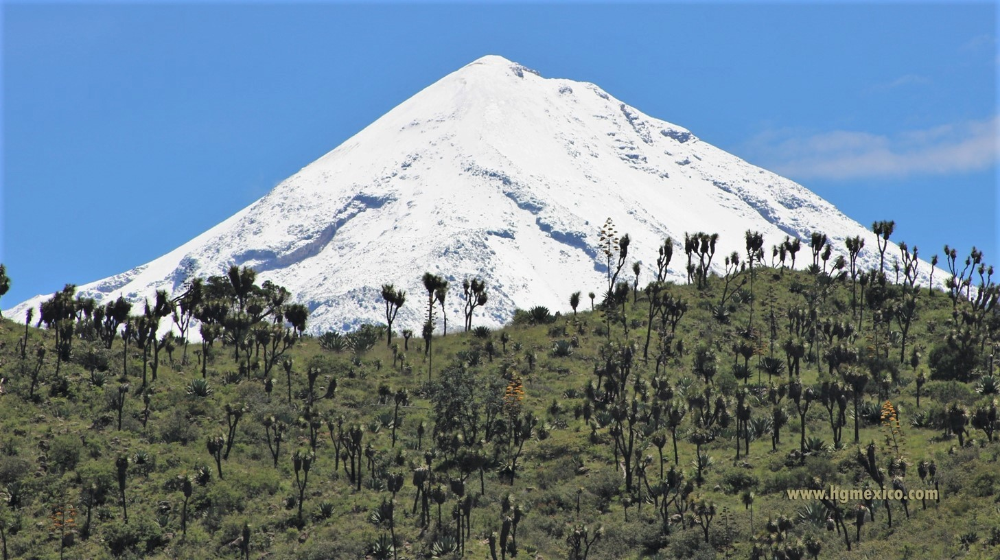
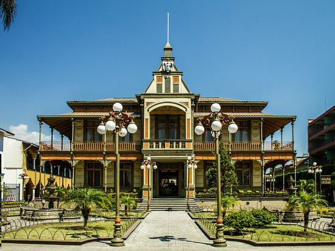
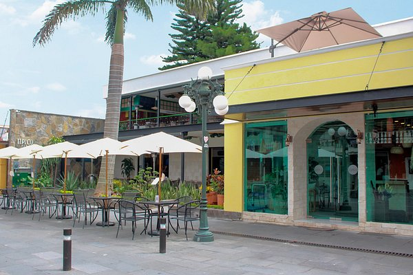
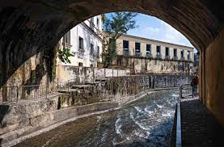
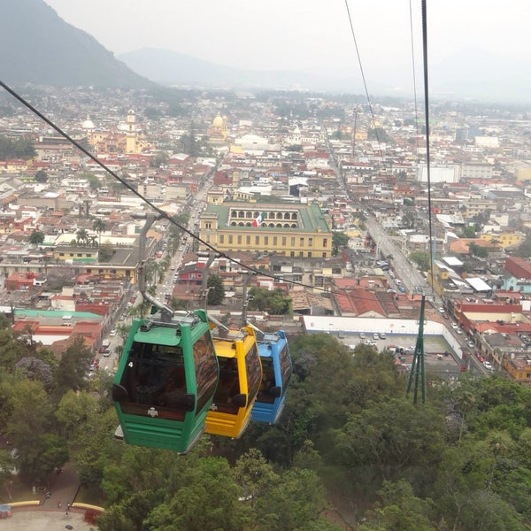
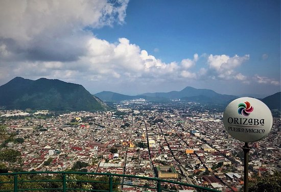
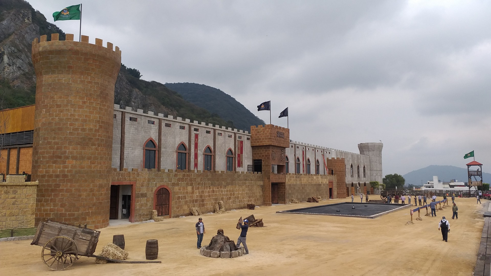

Descubriendo los Encantos de Orizaba
Orizaba es un destino lleno de historia y paisajes impresionantes. En esta entrada, un viajero relata su recorrido desde el majestuoso Pico de Orizaba, la montaña más alta de México, hasta el Centro Histórico, donde se encuentran edificios coloniales y el icónico Palacio de Hierro, diseñado por Gustave Eiffel.


Consejos para recorrer Orizaba como un Local
Para disfrutar al máximo de Orizaba, sigue estos consejos de los locales:
- Utiliza el transporte público: Los taxis y autobuses son accesibles y te permitirán moverte fácilmente por la ciudad.
- Visita los mercados locales: Prueba la gastronomía típica como los tamales, el chileatole y los pambazos.
- Explora rutas menos conocidas: El Paseo del Río es un sendero peatonal con vistas hermosas y espacios tranquilos.
- Descubre el arte y la cultura: Visita los murales urbanos y el Museo de Arte del Estado de Veracruz.
- Planea tu visita en días festivos: Durante celebraciones como el Carnaval de Orizaba o el Día de la Virgen de Guadalupe, la ciudad cobra un ambiente especial.


La Magia del Teleférico de Orizaba
El Teleférico de Orizaba ofrece una experiencia única al ascender hasta el Cerro del Borrego, brindando vistas panorámicas de la ciudad y las montañas circundantes. Durante el trayecto, se pueden observar el río Orizaba y diversos puntos de interés histórico.


Relatos de Aventura en el Tobogán de la Montaña
Para los amantes de la adrenalina, el Tobogán de la Montaña en Orizaba es una atracción imperdible. Se trata de un resbaladilla gigante que desciende por la montaña a gran velocidad, combinando diversión y emoción en un entorno natural impresionante.

La Historia Oculta de Casavegas
Casavegas es una de las casas más antiguas de Orizaba, destacando por su arquitectura colonial y su historia fascinante. A lo largo de los años, ha sido testigo de eventos importantes y es considerada un emblema del patrimonio cultural de la ciudad.
